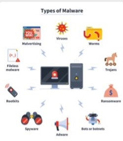

Malware is a type of software that illegally creates threats, accesses data and breaks into other softwares or systems. Its purpose is to disrupt the flow of a computer and cause harm.
There are many types of malware some examples are:
In order to avoid malware you need to learn how to use the internet correctly without trusting everything you see online.
You should install an antivirus such as totalav
if your device does'nt have one already embeded in its software.
Make sure to have installed the correct antivirus for you considering the device that you have,
the software it is using, the kind of protection you want and the year the antivirus was published.
Another tool simular to an antivirus is a VPN. VPN stands for Virtual Private Network and
provides to the user securety and safety by changing their IP adress so that their device cannot be tracked.
An example of a VPN that you can install is
expressvpn.
According to norton blog signs of Malware are: